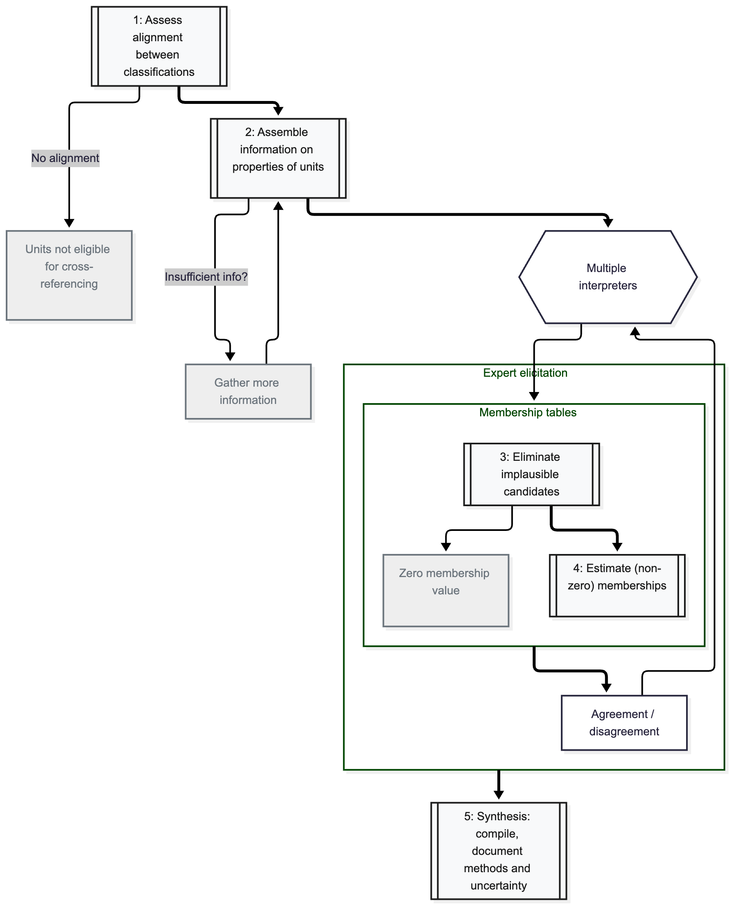

flowchart TB
PREP["Data Preparation:<br/>importing, joining, filtering, modifying datasets "]:::Tasks
VALID{"Data<br/>Validation"}:::Tasks
EXP[Exploration:<br/> Interpreters, rounds, membership values]:::Tasks
NINT{"Two rounds"}:::Tasks
ELI1[Within round<br/>agreement & entropy]:::Tasks
ELI2[Within round<br/>agreement & entropy]:::Tasks
ELI3["Between rounds<br/>agreement & entropy metrics"]:::Tasks
SYNT[Synthesis & outputs]:::Tasks
subgraph FIRST["Data preparation and exploration"]
direction LR
PREP --> VALID
VALID -->|no| PREP
VALID -->|yes| EXP
end
FIRST:::Steps --> SECOND:::Steps
subgraph SECOND["Analysis and synthesis"]
direction LR
NINT -->|"Round 1"| ELI1 --> ELI3
NINT -->|"Round 2"| ELI2 --> ELI3
ELI2 --> SYNT
end
classDef Tasks fill:#fff,stroke:#90853E,color:#2d5a27,stroke-width:2px
classDef Steps fill:#fff,stroke:#853E90,color:#853E90,stroke-width:1px
1 Stepwise cross-referencing process
The need to cross-reference different ecosystem classification systems arises frequently in ecological research, national ecosystem accounting, Red List of Ecosystems assessments, and conservation reporting. The conceptual foundations, standards, and diagnostic methods for cross-referencing classifications to the IUCN Global Ecosystem Typology (IUCN GET; Keith et al. (2022)) are established in IUCN (2025).
Here we apply consistent standards and reproducible computational methods so that relationships between classification units are explicit, auditable, and straightforward to update whenever new ecological evidence or updated spatial maps become available. Formalising the cross-referencing pipeline also minimises undocumented or divergent interpretations when local vegetation typologies are translated into global reporting frameworks (De Cáceres and Wiser 2012; IUCN 2025).
Cross-referencing links a source classification to a target classification, where the target classification typically has a broader thematic or geographic scope than the source. Each unit in the source classification can relate directly to one or more units in the target classification. Following fuzzy set theory (Zadeh 1965) and the IUCN guidelines (IUCN 2025), this relationship is quantified using fuzzy membership values between 0 (0%, excluded) and 1 (100%, unambiguous assignment), summing to 1 across all assigned target units for a given source unit and interpreter.
Combining independent membership assessments from multiple domain experts—structured across iterative elicitation rounds with facilitated discussion between rounds—reduces linguistic ambiguity, guards against individual cognitive biases, and yields robust, transparent estimates of both consensus and residual thematic uncertainty (Martin et al. 2012; Hemming et al. 2018).
1.1 Overview of the stepwise cross-referencing process
A five-step diagnostic process ensures that the cross-referencing exercise upholds four core principles: (1) conceptual alignment of classifications, (2) membership estimation based on entity properties, (3) weight of evidence, and (4) transparent representation of uncertainty (IUCN 2025).

- Steps 1 and 2 establish conceptual eligibility and assemble the ecological and spatial reference information that underpins all subsequent decisions.
- Steps 3 and 4 involve multiple domain experts independently eliminating implausible target units and estimating non-zero fuzzy memberships. Conducting a second round of elicitation after structured group discussion (analogous to the Investigate–Discuss–Estimate–Aggregate, or IDEA, protocol; Hemming et al. (2018)) typically involves:
- gathering independent first-round expert contributions,
- analysing inter-interpreter discrepancies, target usage, and uncertainty to guide structured discussion, and
- collecting revised second-round contributions from each interpreter.
- Step 5 synthesises the validated multi-interpreter membership tables into summary tables, spatial area estimates, and geospatial outputs, while documenting remaining sources of uncertainty.
1.2 Reproducible computational workflow
This repository assists in the translation of parts of the conceptual process in Figure 1.1 into a reproducible computational workflow.
While the computation workflow is reproducible for correctly formatted input data, we stress that these steps cannot be decoupled from the expert elicitation process. Ultimately all inputs and outputs have to be checked and reviewed by the human expert with the ecosystem specific knowledge to make correct decisions and interpretations.
The workflow takes raw interpreter spreadsheets (xrefdata/) and authoritative TASVEG 5.0 spatial data (gisdata/), executes validation and analysis steps transparently in R, and produces versioned, FAIR-aligned data products (Wilkinson et al. 2016; Barker et al. 2022).
We build on the ecoSynthesis R package (Ferrer-Paris, Gould, and Singh 2026)—currently under active development—together with repository-specific helper functions in scripts/functions.R and standard spatial/tidyverse packages. Throughout this book, explicit call-out notes highlight where package functions and repository helpers overlap or differ, explaining which implementation is preferred at each step.
To keep documentation rendering fast and modular, the analytical Quarto workflow (docs-src/) is kept separate from the standalone output-generation scripts (scripts/), which perform computationally heavier tasks such as 90 m rasterisation (fasterize) and statewide GeoPackage assembly (see Chapter 17).
Within the analytical workflow, we distinguish two main computational stages: (1) Data preparation, validation, and exploration, and (2) Analysis and synthesis (see Figure 1.2).
1.3 Structure of this document
- Preliminaries: Source classification overview (Chapter 2) and conceptual alignment to IUCN GET (Chapter 3).
- Part I — Preparation: Lookup tables (Chapter 4), reading heterogeneous membership tables (Chapter 5), validation and cleaning (Chapter 6), and initial data exploration (Chapter 7).
- Part II — Analysis: Within-round agreement, target usage, and Shannon’s entropy for Round 1 (Chapter 8) and Round 2 (Chapter 9), followed by between-round comparisons (Chapter 10).
- Part III — Synthesis: Membership synthesis strategies (Chapter 11), unweighted and weighted area summaries (Chapter 12), and spatial output concepts (Chapter 13).
- Appendices: Glossary, membership table formats (Chapter 15), R reproducibility and benchmarking notes (Chapter 16), and the status overview of all repository outputs (Chapter 17).